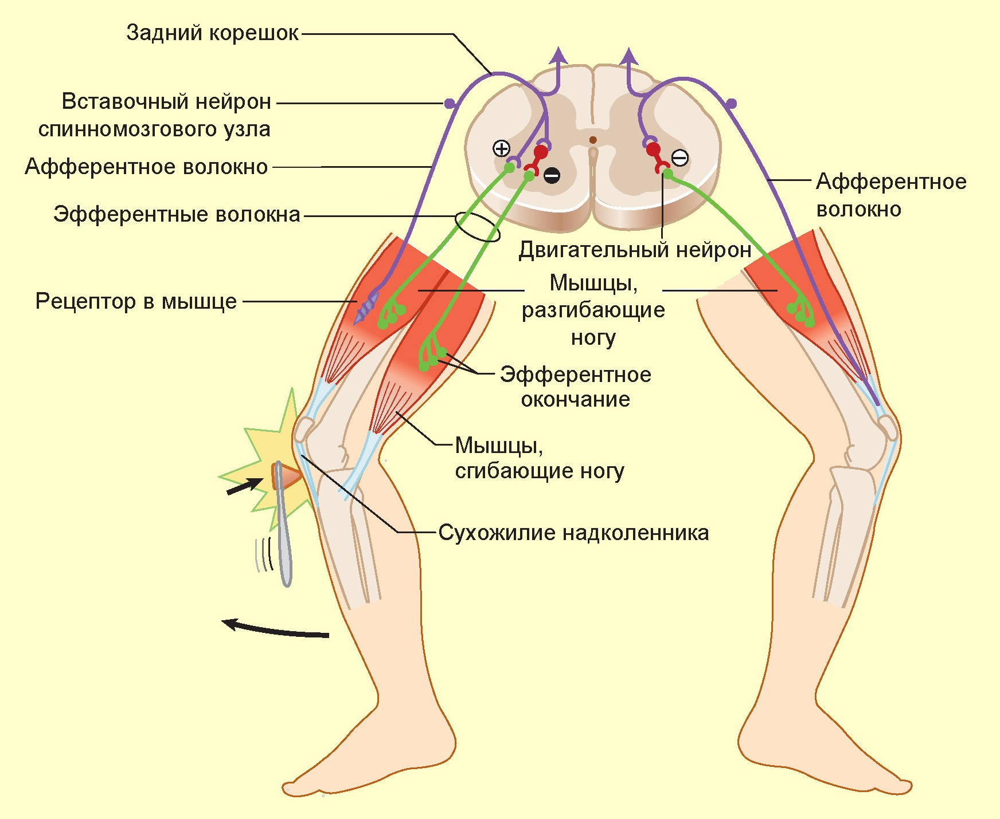
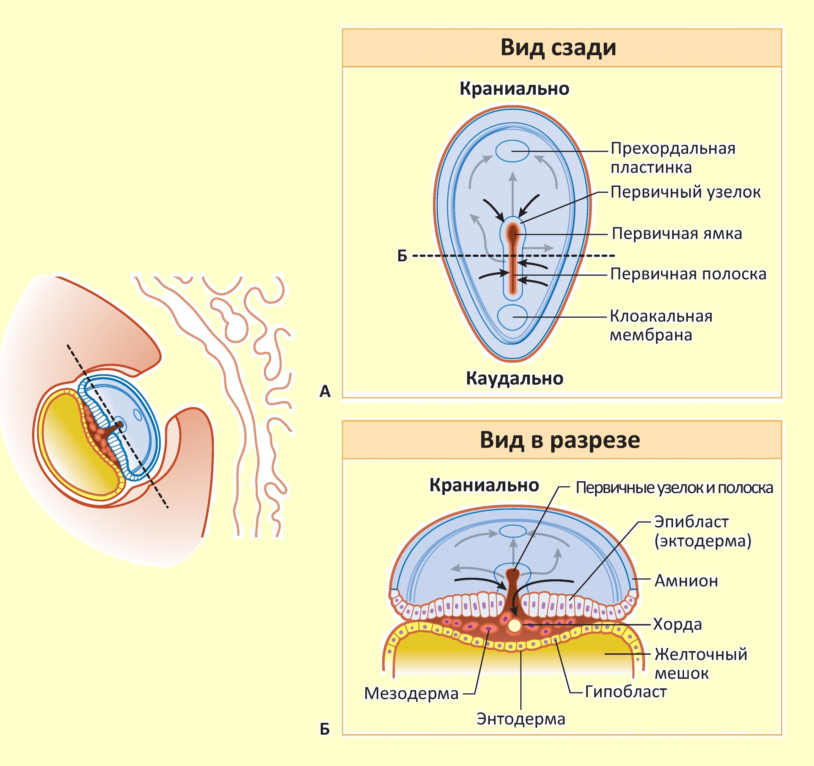
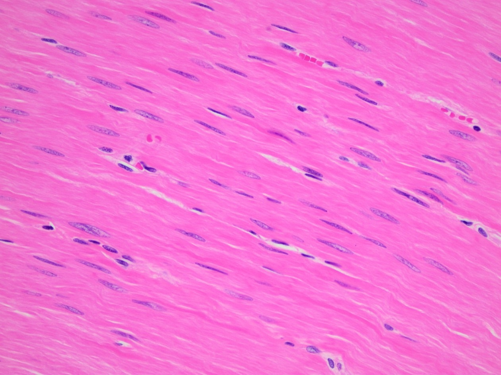
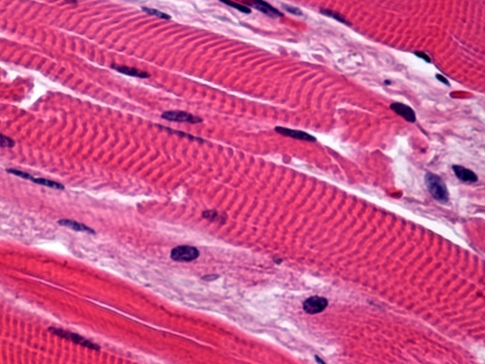
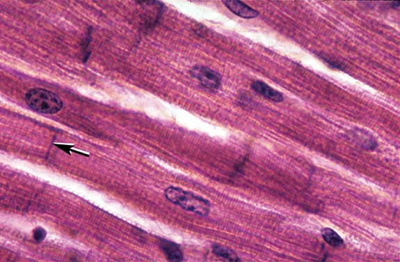
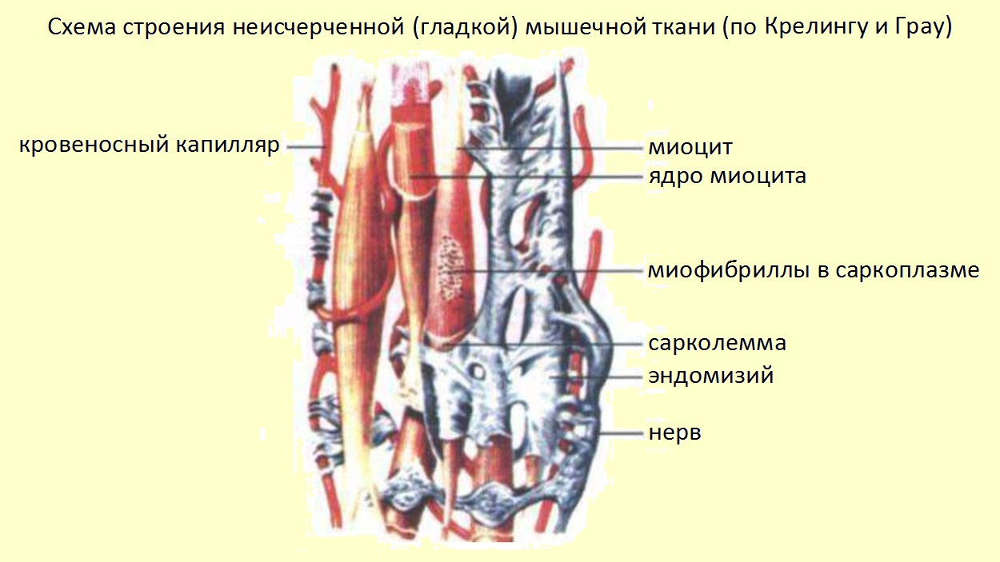
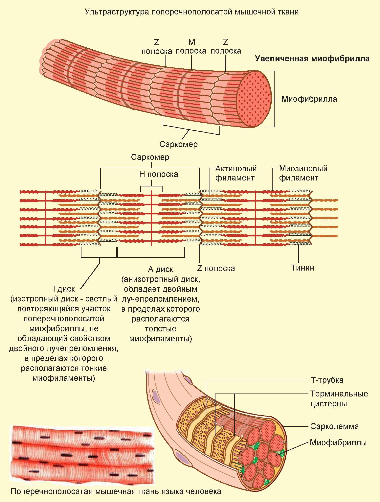
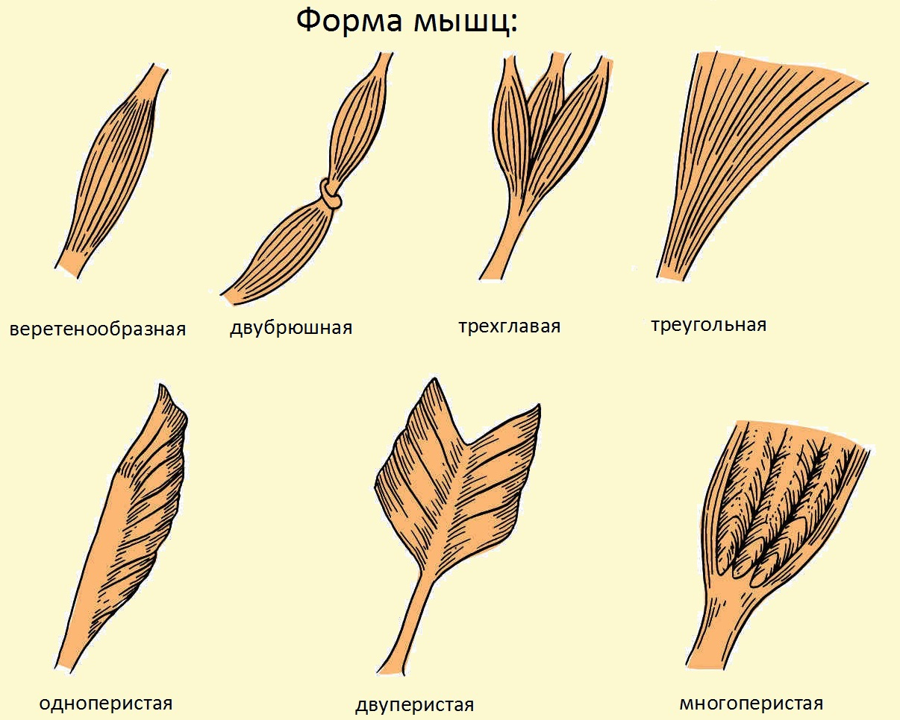
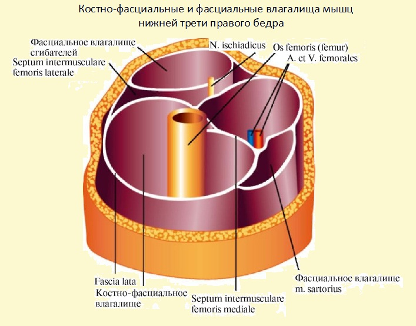
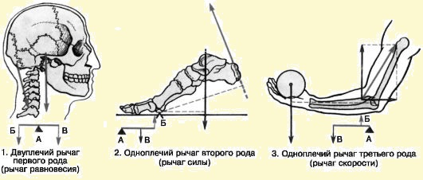

ОБЩИЕ СВЕДЕНИЯ О МЫШЦАХ
Мышцы - активная часть опорно-двигательного аппарата. И.М. Сеченов (1866) писал: «Все бесконечное разнообразие внешних проявлений мозговой деятельности сводится окончательно к одному лишь явлению - мышечному движению. Смеется ли ребенок при виде игрушки, улыбается ли Гарибальди, когда его гонят за излишнюю любовь к Родине, дрожит ли девушка при первой мысли о любви, создает ли Ньютон мировые законы и пишет их на бумаге - везде окончательным фактом является мышечное движение». Мышечное движение связано с возбудимостью, которая проявляется изменением их упругих свойств мышц, что ведет к их укорочению (сокращению) или удлинению (расслаблению). Большинство мышц прикрепляются к костям, которые формируют рычаги. От одной кости к другой мышцы проходят, перекидываясь через суставы, что обусловливает их динамическую работу - сближение или отдаление костей, к которым они прикреплены. Следовательно, при помощи мышц усиливается не только опорная роль скелета, но и осуществляется движение составляющих его костей. При напряжении мышц, равном по действию сопротивлению, движения не происходят. Если движения нет, увеличение напряжения мышц ведет к фиксации подвижных точек скелета. Совершается статическая работа. Напряжение, поддерживаемое мышцами в состоянии покоя, называют мышечным тонусом.
Часть мышц, которые окружают полости тела, выполняют не только двигательную и опорную функции, но и защищают внутренние органы от механических воздействий. Кроме этого, достаточная прочность и одновременно податливость мышечной стенки (например, ротовой полости, живота или диафрагмы) создают условия для изменения объема полостей.
Степень напряжения мышц регулируется рефлекторно центральной нервной системой. В мышцах находятся рецепторы двигательного анализатора, которые сигнализируют в центральную нервную систему обо всех изменениях состояния мышцы посредством рефлекторной дуги.

ЭМБРИОГЕНЕЗ И ГИСТОСТРУКТУРА МЫШЕЧНЫХ ТКАНЕЙ

Эмбриогенез скелетных мышц происходит следующим образом. На 3-й неделе эмбрионального развития в главном отделе дорсальной мезодермы возникает сегментация с образованием мешковидных образований - сомитов.
В конце 4-й недели эмбрионального развития формируется 40 пар сомитов:
•
•
•
•
•
•
Сомиты увеличиваются в объеме и отделяются друг от друга с помощью соединительнотканных перегородок (myosepta). В центре сомитов образуется небольшая полость - миоцель, которая разделяет сомит на две пластинки:
•
•
В дальнейшем сомит делится на три части:
•
•
•
Миотомы разрастаются в вентральном направлении и делятся на части:
•
•
В головном отделе эмбриона из мезодермы жаберных дуг возникает группа бранхиогенных мышц - мышцы головы, шеи, мягкого нёба, глотки, гортани. Они иннервируются V, VII, IX, X черепными нервами.
В каждый миотом врастают спинномозговые нервы, образующиеся на уровне сомита. Нерв делится на передние и задние ветви соответственно делению миотома. При изменении положения мышцы изменяется и положение нерва, который к нему подходит. Примером может быть диафрагма, которая сначала закладывается в пределах V-VI шейных сомитов, а затем смещается к нижней апертуре грудной клетки. Иннервация диафрагмы осуществляется диафрагмальным нервом, который формируется из IV-V шейных спинномозговых нервов и приобретает нисходящее направление. Расщепление мышечных закладок приводит к образованию:
•
•
Некоторые мышцы остаются на месте своего развития и сохраняют сегментарное строение. Они образуют так называемую местную, аутохтонную мускулатуру (от греч. autos - одна и та же, chton - земля). Примером могут служить межреберные мышцы. Другие мышцы перемещаются с туловища на конечности - трункофугальные мышцы (от латин. truncus - ствол, туловище; fugo - бегу). Некоторые мышцы перемещаются с конечностей на туловище; они получили название - трункопетальные мышцы (peto - стремлюсь).
Существуют три типа мышечной ткани:
•

•

•

Происхождение перечисленных мышечных тканей разное.
Таблица. Пути происхождения мышечной ткани.
|
Неисчерченные |
|||
|
Мезенхимная |
Эпидермальная |
Нейральная |
|
|
Поперечно-исчерченные |
|||
|
Скелетная (миотомная) |
Сердечная (целомическая) |
||
Неисчерченная мышечная ткань
Неисчерченная мышечная ткань имеет сложное строение.

Неисчерченная мышечная ткань мезенхимного происхождения образует мышечные оболочки внутренних органов. Неисчерченные миоциты чаще имеют веретенообразную форму. Длина их составляет от 15 до 500 мкм, а толщина - 5-8 мкм. Ядра клеток вытянуты по длине. При сокращении клеток они могут приобретать штопорообразный вид. Органеллы в этих клетках развиты слабо. В цитоплазме находятся многочисленные пиноцитозные пузырьки, которые передают внутрь клетки раздражения, что, в свою очередь, вызывает ее сокращение.
Сократительный аппарат неисчерченных миоцитов (миофибриллы) состоит из тонких миофиламентов, образованных актином, и толстых, сформированных миозином. Миоциты ограничены базальной мембраной, а также коллагеновыми (ретикулярными) и эластическими волокнами. Эти структурные компоненты гладкой мышечной ткани образуются самими гладкими миоцитами.
Эфферентная (двигательная) иннервация гладких миоцитов осуществляется постганглионарными волокнами автономной нервной системы. Соседние миоциты через отверстия в базальной мембране образуют друг с другом щелевидные соединения (нексусы), обеспечивающие функциональные взаимодействия клеток.
Неисчерченная мышечная ткань эпидермального происхождения образована миоэпителиальными клетками, которые образуются из кожной эктодермы. Они имеют звездчатую (отростчатую) форму и входят в состав потовых, молочных и слюнных желез. Расположенные между эпителиальными клетками и базальной мембраной секреторных отделов желез и мелких выводных протоков, они, сокращаясь, содействуют выведению секрета.
Неисчерченная мышечная ткань нейрального происхождения образуется в процессе эмбрионального развития глазного яблока из клеток стенки глазного бокала. Она входит в состав мышц радужной оболочки и реснитчатого тела глазного яблока, которые обеспечивают аккомодацию, расширяют или суживают зрачок.
Поперечно-исчерченная скелетная мышечная ткань
Состоит из удлиненных образований - мышечных волокон, которые имеют вид цилиндров с заостренными концами.

Волокна достигают 80-100 мкм в диаметре и до 10-12 см в длину. В центре мышечных волокон располагаются многоядерные образования (симпласты), к которым извне прилегают клетки - миосателлитоциты. Волокна отграничены сарколеммой, образованной базальной мембраной и плазмолеммой симпласта.
Миосателлитоциты располагаются под базальной мембраной мышечного волокна так, что их плазмолемма соприкасается с плазмолеммой симпласта. Эти клетки представляют собой камбиальный резерв скелетной мышечной ткани, за счет которого осуществляется регенерация ее волокон.
В состав миосимпластов входят:
•
•
•
В околоядерном участке расположены слабо развитая гранулярная эндоплазматическая сеть и комплекс Гольджи. Мышечное волокно с его оболочкой, нервными окончаниями, кровеносными и лимфатическими капиллярами называется мышечной единицей (мионом).
Характерная особенность волокон скелетной мускулатуры - поперечная исчерченность, обусловленная чередованием двоякопреломляющих (анизотропных) А-дисков и однопреломляющих (изотропных) И-дисков.
В состав дисков входят миофибриллы, которые образуют сократительный аппарат волокон. Одно мышечное волокно может насчитывать до 2000 миофибрилл. Последние состоят из упорядоченных нитей сократительных белков актина и миозина. Эти нити закрепляются поперечно расположенными телофрагмами и мезофрагмами, которые состоят из других белков. Отрезок миофибриллы между соседними телофрагмами называется саркомером. Он представляет собой морфофункциональную единицу сократительного аппарата волокна. В его средней части расположена мезофрагма (М-линия на продольных срезах). От мезофрагмы в сторону телофрагмы отходят толстые (около 11 нм в поперечнике) нити миозина, а от телофрагмы навстречу им - тонкие (около 5 нм) нити актина. Миозиновые нити - главный компонент темных дисков, а актиновые - светлых дисков. В составе темного диска актиновые и миозиновые нити располагаются параллельно. Средний отрезок А-диска имеет только миозиновые нити и называется Н-полоской (светлой зоной).
Цитолемма симпластической части мышечного волокна на уровне телофрагм образует глубокие впячивания - поперечные трубочки, или Т-трубочки (от лат. transversus - поперечный). Параллельно этим трубочкам расположены расширенные участки канальцев агранулярной эндоплазматической сети (конечные цистерны), которые сопровождают их с двух сторон. Вместе с Т-трубочками они образуют триады. В конечных цистернах агранулярной эндоплазматической сети в расслабленном состоянии мышечного волокна аккумулируются ионы кальция.
Под влиянием распространения по цитолемме волокна и Т-трубочкам потенциала действия ионы кальция выходят из конечных цистерн, поступают в миофибриллы и, взаимодействуя с особыми регуляторными белками - тропонином и тропомиозином, вызывают активное сокращение. При этом актиновые и миозиновые нити, взаимодействуя между собой, скользят навстречу друг другу.
Актиновые нити, перемещаясь между миозиновыми, приближаются к М-линии, в связи с чем при сокращении мышечного волокна уменьшается ширина Н-полоски и I-диска. Ширина А-диска остается при этом постоянной. В целом смещение разных типов нитей приводит к уменьшению длины миофибрилл, обусловливая сокращение.
Все мышечные волокна в зависимости от соотношения миофибрилл, митохондрий и миоглобина делятся на две группы: красные и белые волокна, между которыми существуют переходные типы.
•
•
Поперечно-исчерченная сердечная мышечная ткань
Состоит из кардиомиоцитов (сердечных мышечных клеток). Последние бывают двух типов:
•
•
Сократительные кардиомиоциты имеют цилиндрическую форму, их длина составляет 100-150 мкм, а диаметр - 10-20 мкм. В центре клетки находится одно ядро (иногда - два), вокруг которого располагаются органеллы. Сократительный аппарат, как и в скелетных мышечных волокнах, представлен миофибриллами, в которых чередуются А- и И-диски, обусловливая поперечную исчерченность волокон. Между миофибриллами расположены канальцы агранулярной эндоплазматической сети (депо ионов кальция). Плазмолемма образует впячивания - Т-трубочки.
Механизм сокращения кардиомиоцитов такой же, как и в скелетных мышечных волокнах: возбуждение с плазмолеммы через Т-трубочки передается на канальцы эндоплазматической сети, из нее выходят ионы кальция, воздействующие на миофибриллы, что и обусловливает сокращение.
Кардиомиоциты, соединяясь последовательно друг с другом при помощи вставочных дисков, образуют цепочки - функциональные мышечные волокна.
Вставочные диски, по данным электронной микроскопии, состоят из межклеточных контактов трех типов:
•
•
•
Сердечная мышечная ткань в эмбриогенезе развивается из утолщенного участка висцерального листка вентральной мезодермы в шейной области зародыша - миоэпикардиальная пластинка. Большая часть клеток последней превращается в кардиомиоциты, меньшая - в мезотелий эпикарда.
СКЕЛЕТНЫЕ МЫШЦЫ
Скелетная мышца - орган, имеющий характерную форму и строение, типичную архитектонику сосудов и нервов, построенный из пучков поперечнополосатых скелетных мышечных волокон, связанных между собой рыхлой соединительной тканью, и покрытый снаружи собственной фасцией.
В теле человека насчитывается примерно 639 мышц, 317 из них парные, 5 - непарные.
В скелетной мышце выделяют:
•
•
•
Мышцы конечностей имеют узкие и длинные сухожилия, мышцы стенок полостей тела - широкое и плоское сухожилие (апоневроз). Сухожилие малорастяжимо и выдерживает огромные нагрузки. Сухожилие четырехглавой мышцы бедра выдерживает растяжение силой в 600 кг, трехглавой мышцы голени (ахиллово сухожилие) - 400 кг.
Сухожилия состоят из параллельных пучков коллагеновых волокон, между которыми расположены фиброциты и небольшое количество фибробластов. Это пучки первого порядка. Рыхлая волокнистая неоформленная соединительная ткань (эндотендиний) окутывает несколько пучков первого порядка, образуя пучки второго порядка. Сухожилие снаружи покрыто перитендинием - футляром из плотной волокнистой соединительной ткани, в котором проходят сосуды и нервы.
Мышцы бывают:
•
•
•
Форма мышц связана с их функцией. На конечностях чаще всего встречаются мышцы веретенообразной формы, у которых пучки волокон ориентированы параллельно длинной оси мышцы. Мышцы лентовидной формы в виде пластин участвуют в образовании стенок туловища (например, косые и поперечная мышцы живота).
Если мышечные пучки прикрепляются к продольному сухожилию с двух сторон, мышца называется двуперистой, а если с одной стороны - одноперистой. Мышцы могут иметь несколько головок, тогда мышца называется дву-, трех- или четырехглавой.
Мышца может иметь одно брюшко, от которого отходит несколько сухожилий (хвостов), которые прикрепляются к различным костям (сгибатели и разгибатели пальцев кисти и стопы). Пучки некоторых мышц расположены циркулярно (например, круговая мышца рта).

Классификация скелетных мышц
•
По форме:
-
ромбовидная;
-
трапециевидная;
-
квадратная;
-
круглая.
•
По величине:
-
большая;
-
малая;
-
длинная;
-
короткая.
•
По направлению:
-
поперечная;
-
косая.
•
По количеству головок или брюшек:
-
двуглавая;
-
трехглавая;
-
двубрюшная и т.д.
•
По названию костей, от которых мышцы берут начало и к которым прикрепляются:
-
плече-лучевая;
-
грудино-ключично-сосцевидная и т.д.
•
По выполняемым функциям:
-
сгибатель (flexor);
-
разгибатель (extensor);
-
вращатели (кнутри - pronator, кнаружи - supinator);
-
подниматель (levator);
-
отводящая от средней линии (abductor);
-
приводящая к средней линии (adductor).
Выделяют дву- и многосуставные мышцы, последние чаще располагаются поверхностно, имеют более длинные сухожилия, которые перекидываются через два и большее число суставов.
Вспомогательный аппарат мышц:
•
•
•
•
Фасция - соединительнотканная оболочка мышцы, которая отграничивает мышцы друг от друга, выполняет механическую функцию, создавая опору для брюшка при сокращении, ослабляет трение мышц. Различают фасции собственные и поверхностные. Собственная фасция делится на поверхностные и глубокие пластинки. Поверхностная фасция располагается под кожей. Межмышечные перегородки разделяют группы мышц, выполняющих различные функции.

В местах, где сухожилия перекидываются через костные выступы, фасции утолщаются в виде сухожильных дуг. В области голеностопного, лучезапястного суставов утолщенные фасции прикрепляются к костным выступам, образуя удерживатели сухожилий и мышц сгибателей и разгибателей.
Синовиальное влагалище отделяет движущееся сухожилие от неподвижных стенок фиброзного влагалища и устраняет трение их друг об друга. Выделяют висцеральный (внутренний) и париетальный (наружный) листки. Висцеральный листок сращен с сухожилием, париетальный - выстилает стенки фиброзного влагалища. Оба листа переходят друг в друга на концах влагалища, а на обращенной к кости стороне формируют брыжейку сухожилия (мезотенон). В нем проходят кровеносные сосуды, нервы, снабжающие сухожилие.
В зонах расположения суставов, где сухожилие или мышца перекидываются через кость или через соседнюю мышцу, есть синовиальные сумки, которые защищают сухожилие от повреждений.
Синовиальная сумка представляет собой плоский двустенный мешочек, выстланный синовиальной оболочкой и содержащий небольшое количество синовиальной жидкости. Чаще сумки находятся вблизи суставов у мест прикрепления сухожилий. Часть из них сообщается с полостью сустава.
Элементы биомеханики
При сокращении концы мышц, прикрепленные к костям, приближаются друг к другу. Кости, соединенные суставами, действуют как рычаги. В биомеханике выделяются два типа рычагов.

•
•
-
Рычаг силы наблюдается в том случае, когда плечо приложения мышечной силы длиннее плеча сопротивления. Например, в стопе точкой опоры служат головки костей плюсны, точкой приложения мышечной силы (трехглавая мышца голени) - пяточная кость, а точкой сопротивления (тяжесть тела) - голеностопный сустав (ось вращения). В этом рычаге имеется выигрыш в силе и проигрыш в скорости перемещения точки сопротивления.
-
Рычаг скорости: плечо приложения мышечной силы короче, чем плечо сопротивления, где приложена противодействующая сила тяжести. При преодолении силы тяжести, отстоящей на значительном расстоянии от точки вращения в локтевом суставе (точка опоры), необходима большая сила мышц-сгибателей, прикрепляющихся вблизи локтевого сустава. При этом происходит выигрыш в скорости и размахе движения более длинного рычага (точка сопротивления) и проигрыш в силе, действующей в точке приложения этой силы.
Изменяя положение костных рычагов, мышцы действуют на суставы. При этом каждая мышца влияет на сустав только в одном направлении. У одноосного сустава - две действующие на него мышцы (группы мышц), являющиеся антагонистами (сгибатель-разгибатель). На каждый сустав в одном направлении действуют, как правило, две мышцы и более - синергисты. У двухосного сустава мышцы группируются соответственно двум его осям, вокруг которых совершаются движения. К шаровидному суставу, имеющему три оси движения (многоосный сустав), мышцы прилежат со всех сторон. Например, в плечевом суставе имеются мышцы-сгибатели и разгибатели (движения вокруг фронтальной оси), отводящие и приводящие (сагиттальная ось) и мышцы, вращающие кисть вокруг продольной оси, - кнутри (пронаторы) и кнаружи (супинаторы). Выделяют анатомический и физиологический поперечники мышцы.
•
•
Размах сокращения (амплитуда) зависит от длины мышечных волокон.
•
•
Точка приложения равнодействующих всех сил по отношению к телу человека - центр тяжести. Общий центр тяжести у мужчины расположен на уровне II крестцового позвонка, у женщины - несколько ниже, у детей - выше: у новорожденного - на уровне VI грудного, у двухлетнего ребенка - на уровне I поясничного, у пятилетнего - III поясничного позвонка.